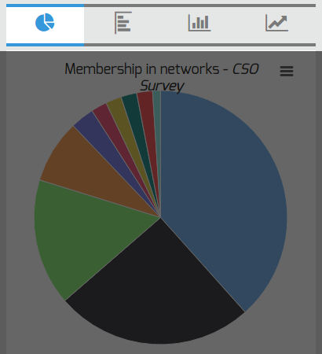
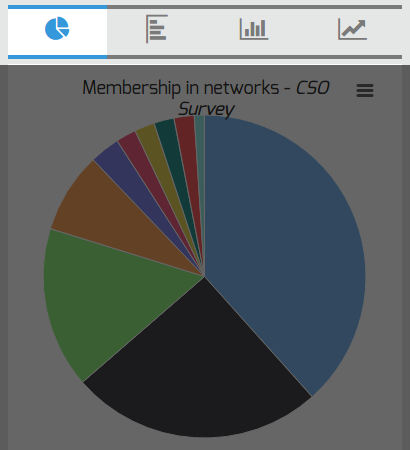

{% if page.language == "albanian" %} Zgjedhni temën të cilën dëshironi t’a analizoni {% elsif page.language == "serbian" %} Izaberite temu koju želite da analizirate. {% else %} Select a topic you wish to analyze. {% endif %}
{% if page.language == "albanian" %} Përcaktoni indikatorin që ju intereson. {% elsif page.language == "serbian" %} Navedite indikator za koji ste zainteresovani. {% else %} Specify the indicator you are interested in. {% endif %}
 {% endif %}
{% endif %}
{% if page.language == "albanian" %} Prezantoni të dhënat në njërën nga katër format e grafikoneve në dispozicion {% elsif page.language == "serbian" %} Vizualizirajte podatke sa jednim od četiri dostupna grafikona. {% else %} Visualize the data with one of four available charts: a piechart, horizontal or vertical barcharts, or a pointchart. {% endif %}
 {% elsif page.language == "serbian" %}
{% elsif page.language == "serbian" %}
 {% else %}

{% endif %}
{% else %}

{% endif %}
{% if page.language == "albanian" %} Thellohuni në të dhënat, duke i krahasuar indikatorët në mes vete {% elsif page.language == "serbian" %} Istražite više kako se podaci distribuiraju primenom disagregacije indikatora. {% else %} Dig deeper in how the data is distributed by applying disaggregation. {% endif %}
{% if page.language == "albanian" %} Shkarkoni raportin, bazën e të dhënave si dhe pyetësorin. {% elsif page.language == "serbian" %} Preuzmite izveštaj, podatake i upitnik. {% else %} Download the report, datasets, and questionnaire. {% endif %}
{% if page.language == "albanian" %} Shkarkoni tabelat në formate të ndryshme. {% elsif page.language == "serbian" %} Preuzmite grafikone u različitim formatima. {% else %} Download chart in different formats. {% endif %}